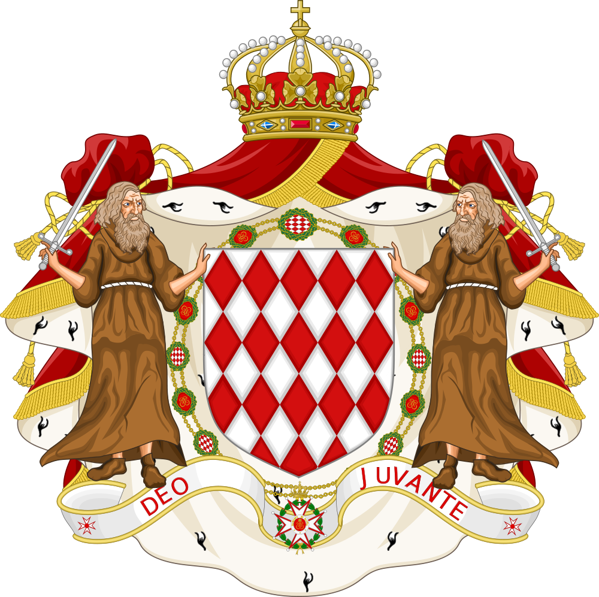

d:\Simon Erik XII.B\Turizmus | Pénzügyek & Ingatlanpiac | Szolgáltatások | Statisztika
Ez a szektor alkotja Monaco gazdaságának igazi szellemi motorját, amely kifejezetten a globális elit, a milliárdosok és a multinacionális vállalatok egyedi igényeinek kiszolgálására szakosodott. Nem kézzelfogható termékeket állítanak elő, hanem a legmagasabb szintű, nemzetközi szaktudást és diszkrét, prémium tanácsadást értékesítik. A hercegségben működő irodák és ügynökségek kulcsfontosságú hátteret biztosítanak a bonyolult vagyonstruktúrák kezeléséhez, a nemzetközi jogi ügyek intézéséhez és az adózási stratégiák optimalizálásához. Ez a terület a csúcsminőségű szellemi tőke koncentrációja, amely nélkül a modern Monaco nem tudna a globális üzleti élet és a luxus központjaként működni.
Ez a rendkívül összetett és sokszínű kategória képezi Monaco mindennapi működésének láthatatlan, de nélkülözhetetlen tartóoszlopát. Miközben a hercegség a csillogásról ismert, ez a szektor gondoskodik arról, hogy a metropolisz infrastruktúrája és szolgáltatásai hibátlanul, óramű pontossággal működjenek. A prémium kereskedelemtől kezdve az innovatív technológiai fejlesztéseken át a mindennapi logisztikáig minden ide tartozik, ami fenntartja a lakók és a látogatók által elvárt ultramodern és biztonságos életszínvonalat. Bár kevesebb médiafigyelmet kap, mint a kaszinók vagy a jachtok, gazdaságilag rendkívül stabil alapot és folyamatos munkahelyeket biztosít az állam számára.
Ide tartoznak: